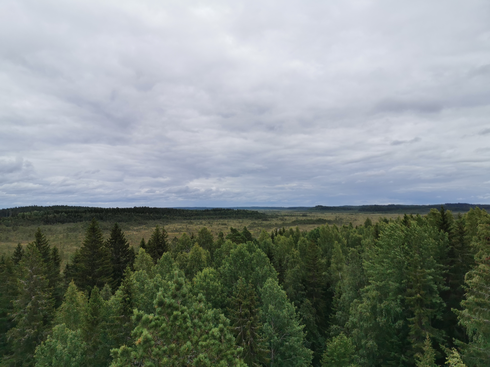
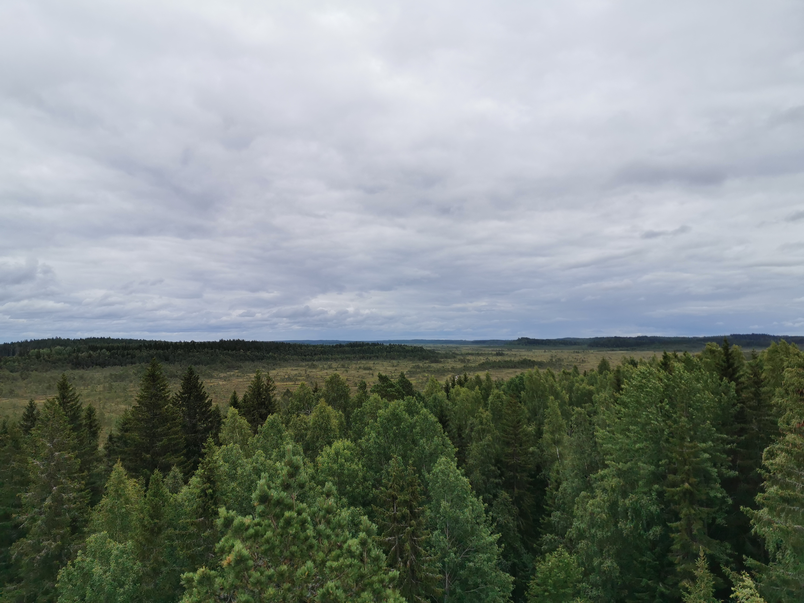

Torronsuon kansallispuisto on perustettu vuonna 1990. Perustamisen pohjana on ollut halu säilyttää laaja, yhtenäinen ja edustava keidassuoalue. Torronsuon kansallispuiston tärkeimmät arvot ovatkin suojelun ja käytön kannalta ainutlaatuisen suuri, edustava ja suurimmaksi osaksi
luonnontilaisena säilynyt suoalue sekä monipuolinen lintu- ja perhoslajisto.
Torronsuo on suosittu nähtävyys, ulkoilukohde ja ainutlaatuinen tutkimuskohde.
Torronsuon kansallispuistossa on monipuolisesti nähtävää. Torronsuolla sijaitsee muun muassa Suomen syvin suo. Suon syvin mitattu kohta on 12,3 metriä ja paksuus on mitattu peräti kilometrin matkalta.
Upean maiseman suolle avaa Kiljamon luontotorni.
Torronsuon kansallispuistosta löytyy myös Härksaaren vanha louhos ja kansallispuistoa lähellä sijaitsee pitkät perinteet omaava, kaunis kulttuuriympäristö Torron kylä.
Sijainti
Parhaiten Torronsuon kansallispuistoon pääsee autolla. Turusta, Tampereelta ja Helsingistä on kustakin matkaa puistoon vain alle pari tuntia.
Torronsuon ainoalle P-alueelle, Kiljamolle, ei kulje julkista liikennettä.
Omalla autolla
- Kiljamon P-alue
- Sijaitsee Forssa-Somero-tien varressa, Tammela.
Julkisilla
- Forssa
- Forssasta P-paikalle on matkaa 11 km.
- Somero
- Matkaa Somerolta Kiljamolle on 15 km.
- Forssaan ja Somerolle
- Linja-autoja kulkee useista suunnista sekä Forssaan että Somerolle.
Torronsuon reitit
Torronsuolta löytyy monipuolisesti reittejä. Kaikki reitit alkavat Kiljamon parkkipaikalta, joka on tällä hetkellä puiston ainoa parkkipaikka.
Hyvälumisena talvena on mahdollisuus hiihtää.
Kävelyreitit
Reittien alkupisteessä on luontotorni sekä esteetön tulipaikka ja käymälä.
- Kiljamon kierros
- Kiljamon kierros on 1,5 km pitkä, helppo ja hyvä piipahdus kansallispuistoon. Hyvä valinta ensikertalaiselle. Reitistä 150 metriä on esteetöntä.
Kierrokseen sisältyvät Suopursupolku (120 m) ja Suokukkapolku (650m). - Suotaival
- 8,5 km pitkä Suontaival johdattaa suon poikki Härksaaren vanhalle louhokselle. Reitti kulkee jonkin matkaa Haipontietä, kunnes opaste "Kiljamo P" johdattaa takaisin suolle ja kohti lähtöpistettä.
- Torron kylän kierros
- Kierros jatkaa Suotaipaleelta Torron kylään, josta asfalttitie johdattaa takaisin Kiljamoon. Reitti on 10 km pitkä.
Hiihtoreitit
Latuja ei ole valaistu ja ne ovat retkihiihtoon tarkoitettuja, perinteisen tyylin latuja.
Lisätietoja löydät: Luontoon.fi
- Kiljamo-Katavasaari-Kiljamo
- 15 km, helppo hiihtää. Matkalta löytyy 2 tulipaikkaa, käymälä sekä talvisunnuntaisin latukahvio.
- Katavasaari-Riihivalkaman P-paikka-Kallio
- 13 km, ei palveluja.

 
